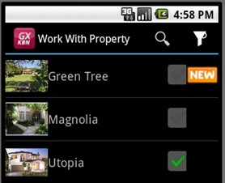
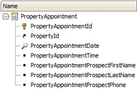
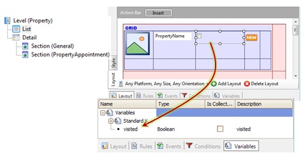
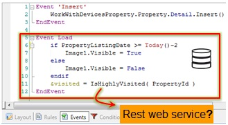
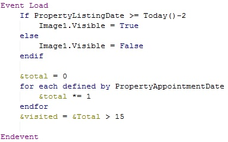

In order to enable Real Estate agents to record all the real estate properties they handle, we have created the Property Transaction and applied the Work With for Smart Devices object pattern to it. Now we have to load a variable on the grid depending on whether the property has had more than a certain number of visits, so as to catalogue it as one of the most visited. In addition, if the property was listed in the last couple of days, we want to display an image indicating that it's new.  To do so, in the PropertyAppointment transaction that records when a prospective buyer visits a property:  We create a procedure called IsHighlyVisited that runs through the appointments associated with the property being loaded in the grid, counts them and if the total exceeds the set number, it returns True.  As we can see, we have defined a variable and inserted it into the form, as we would do with any other web or work panel. In addition, we enter an image called Image1 to indicate whether the property is new. We should remember that the Load event is executed on the Server as many times as records are to be loaded in the grid (because it has attributes, so there is a base table: Property, in this case). Because of this, we have all the attributes of the extended table to be used within the Load event without a For Each command (for instance, PropertyListingDate).  In an SD application event we're invoking a procedure (IsHighlyVisited). Do we need to have this procedure exposed as a Rest web service? The answer is no, because this procedure is not invoked from an event in the client (SD); instead, it is invoked from an event in the server (Load). We would only expose it as a Rest web service if we needed to have it consumed directly from a client event in the SD. Note that we could have done without the procedure, writing its source code instead (that is, the For Each command that scans the PropertyAppointments table, counts the related PropertyId appointments, determines if it's greater than the number considered, for instance,15):  Note: the For Each command is considered as nested in the implicit one.
|
| Backlinks | |
| Load event | Server-side Events in Native Mobile Applications |